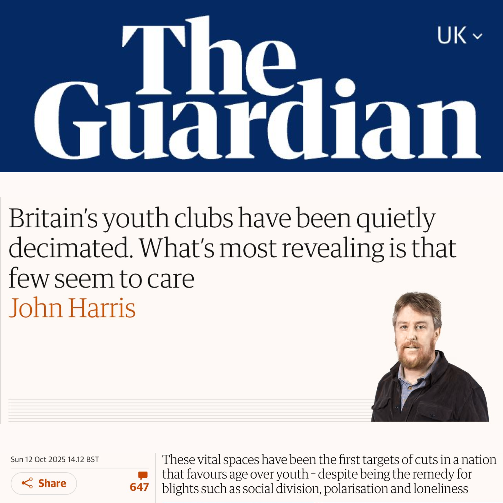
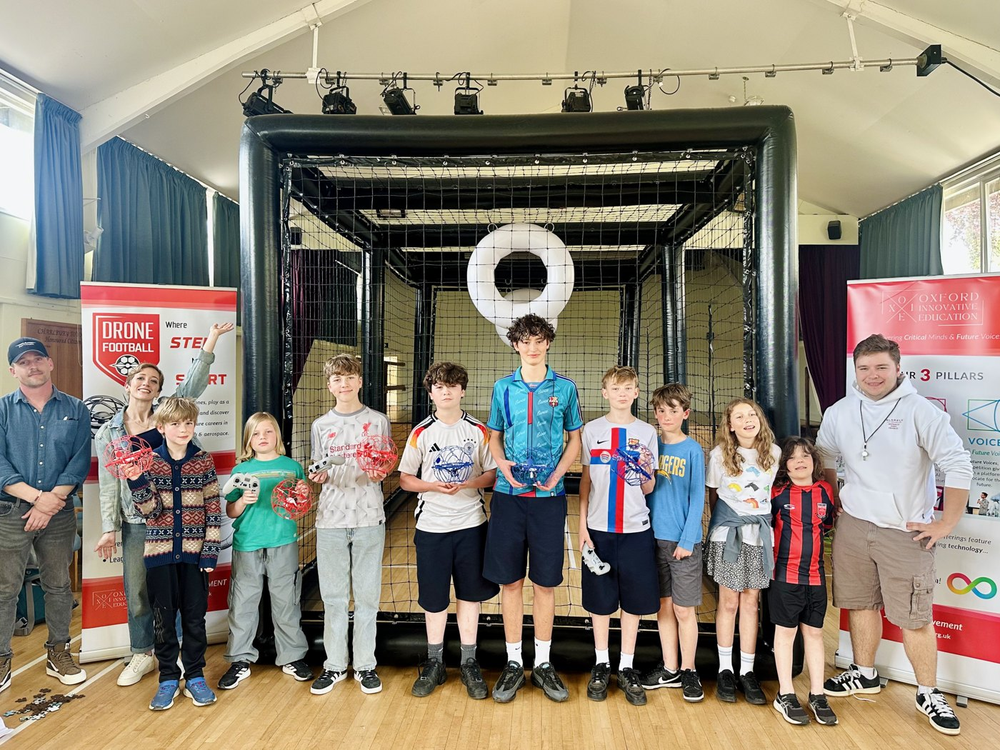
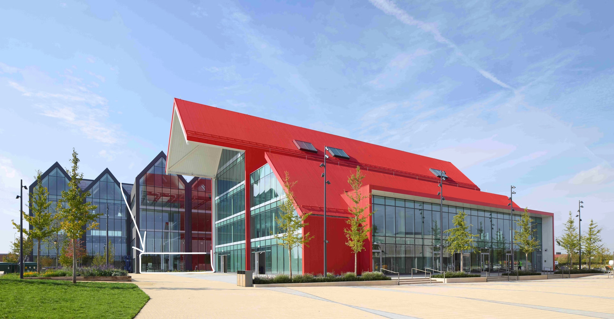

The third spaces where teenagers hang out after school, find mentors, and belong have been vanishing for two decades. A generation is lonelier, more anxious, and more cut off from community than any before it — young people are craving community, and hopelessness is beginning at age 10. We call it the hope gap. OXIE exists to close it.
"What we have in this generation isn't a skills crisis. It's an identity crisis."
— Bryanna Bone, Closing the Hope Gap, 2026

The Studio fills a gap that four systems cannot close on their own.
The pilot targets Charlbury Memorial Hall for September 2026 (venue to be confirmed) — the model proven with a real cohort, then taken on the road: pop-up hackathons, workshops, and exhibitions across the South East.

Pan, zoom and click through each zone.
At launch in September 2026, the Cafe corner, Study area, Art Corner and Drone Football run as regular provision. The Youth Kitchen and Coding Corner start as pop-ups — cooking and coding workshops — becoming regular provision once compliance and staffing requirements are met.
Oxford North is the city's new £1.2bn innovation district — a million square feet of labs and workspace, three new public parks, and thousands of jobs arriving.
We've already run a Drone Football Pop-Up there. Once the Charlbury pilot is proven and an Oxfordshire-wide fundraise is secured, this becomes our permanent Studio and office, from 2027/28.

The Red Hall, Oxford North. Source: Oxford North (oxfordnorth.com), St John's College Oxford, BDC Magazine 2025.
Pan, zoom and click through each zone of the proposed Oxford North studio.
It reframes innovation not just as AI and apps: the food industry is being innovated upon with sustainability — zero-waste restaurants and festivals. Fashion is being innovated upon with bio-engineered leather and upcycling. The Studio includes leadership sessions and book clubs, because future innovators must be free thinking, creative, critically minded, multi-disciplined visionaries.
Not just tech savvy.
Young people's insight is commercially valuable. EdTech companies and technology organisations pay to access Studio cohorts as research participants and product testers — one of the most significant and underexploited revenue streams in the youth sector.
Urgently needed by 31 August 2026 to open Charlbury Memorial Hall (target venue): the venue hire and a youth worker in training.
Then a September–December crowdfunding and grant campaign for the remaining £82,500 in year-one costs, before a joint fundraise for a target permanent base at Oxford North from 2027/28. Year-one Charlbury pilot budget: £90,000 all-in. Detailed budget available on request.
Every tier sits inside the £90,000 year-one Charlbury pilot budget. Drone Football equipment is deliberately deferred to year two. Detailed budget available on request.
Oxford is the UK's second most unequal city (Centre for Cities). OXIE is actively working with partners across Oxfordshire and sectors to close that gap by creating the UK's first Youth Innovation Ecosystem.